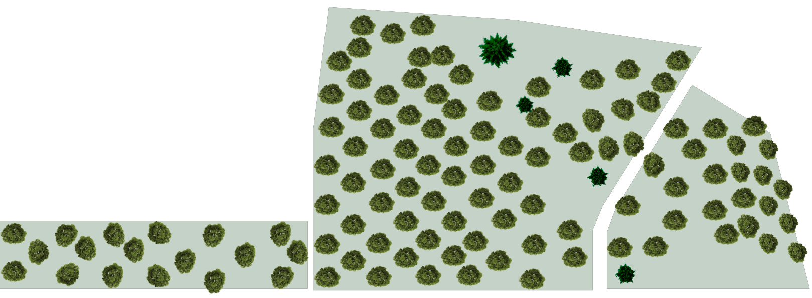

SKOLELUNDEN
Information
Dette er kortet over skolelunden, på Oksbøl kaserne. Du kan på denne side læse om de pensionerede majorer, oberst løjnanter og oberster. Du vil heriblandt kunne læse om deres tid på kasernet og ikke mindst en historien om hvad hver enkelt medarbejder lavede. Klik på det forskellige træer for at læse om de afskedne medarbejdere.
